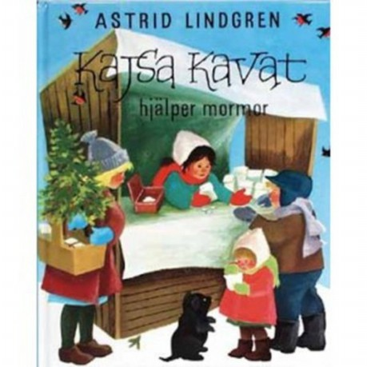

IMDB-Wertung: 5.5 / 10
IMDB-Wertung: 5.5 / 10  Metascore:
Metascore: 
Kajsa gladly helps her grandmother to sell candy canes at the market square. But one day grandmother suffers from a sore leg. Kajsa has to take care of the candy cane sales all by herself.
 IMDB-Wertung: 5.5 / 10 Metascore:
Kajsa gladly helps her grandmother to sell candy canes at the market square. But one day grandmother suffers from a sore leg. Kajsa has to take care of the candy cane sales all by herself.
Jahr: 1989
Dauer: 28 Minuten
FSK:
Land: Schweden Studio: At EntertainmentTonspuren:
Untertitel:
Auflösung: SD (700x568) Größe: 299 MB
Genre: Familie, Kurzfilm, Weihnachten
Regisseur: Daniel Bergman
Drehbuch: Astrid Lindgren
Soundtrack: Steve Dobrogosz
Darsteller:
Datei: X:\Kinder Collections\Astrid Lindgren\Polly hilft der Großmutter (1989, FSK, 700x568).mkv seit 10.01.2018
Festplatte: Kinder-Filme+Trick
 Es gibt insgesamt 26 Filme in der Gruppe 'Kinder Collections\Astrid Lindgren'
Es gibt insgesamt 26 Filme in der Gruppe 'Kinder Collections\Astrid Lindgren'